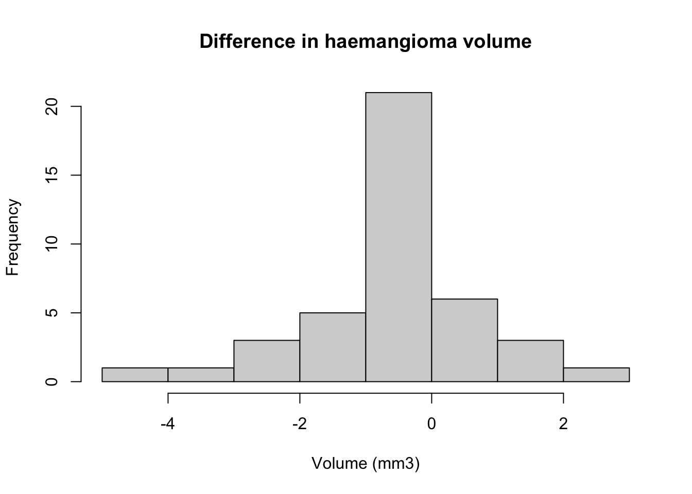

Module 5: Solutions to Learning Activities
Activity 5.1
Indicate what type of t-test could be used to analyse the data from the following studies and provide reasons:
- A total of 60 university students are randomly assigned to undergo either behaviour therapy or Gestalt therapy. After twenty therapeutic sessions, each student earns a score on a mental health questionnaire.
An independent samples t-test could be used because the two groups (behaviour therapy vs Gestalt therapy) are independent. The mental health scores would need to be normally distributed in each group.
- A researcher wishes to determine whether attendance at a day care centre increases the scores of three year old twins on a motor skills test. Random assignment is used to decide which member from each of 30 pairs of twins attends the day care centre and which member stays at home.
This is a twin pair study where one member of a twin is allocated to day care and the other member to stay at home. This is an example of an individually matched study and so a paired t-test is appropriate.
- A child psychologist assigns aggression scores to each of 10 children during two 60 minute observation periods separated by an intervening exposure to a series of violent TV cartoons.
The same children are scored twice (before and after the intervention), thus it is a paired design and a paired t-test is appropriate.
- A marketing researcher measures 100 doctors’ reports of the number of their patients asking them about a particular drug during the month before and the month after a major advertising campaign.
The doctors’ reports are paired because they report before and after an intervention. Therefore, a paired t-test is appropriate.
Activity 5.2
A study was conducted to compare haemoglobin levels in the blood of children with and without cystic fibrosis. It is known that haemoglobin levels are normally distributed in children. The study results are given below:
| Statistic | Children without CF | Children with CF |
|---|---|---|
| n | 12 | 15 |
| Mean | 19.9 | 13.9 |
| SD (SE) | 5.9 (1.7) | 6.2 (1.6) |
- State the appropriate null hypothesis and alternate hypothesis
The null hypothesis: The mean haemoglobin level of children with cystic fibrosis is the same as the mean haemoglobin level of children without cystic fibrosis.
The alternative hypothesis: The mean haemoglobin level of children with cystic fibrosis is different to the mean haemoglobin level of children without cystic fibrosis.
- Use R to conduct an appropriate statistical test to evaluate the null hypothesis. Are the assumptions for the test met for this analysis to be valid?
An independent samples t-test could be carried out to evaluate the study hypothesis because the data have been collected from 2 independent groups of children (children with and children without cystic fibrosis).
The assumption of independence is met. The outcome variable is continuous and the data are approximately normally distributed in the underlying population (as mentioned in the question).
We are provided with summarised data (i.e. means and standard deviations in each group), and not individual data. Therefore, we cannot use the standard
t.test()function. TheBSDApackage has thetsum.test()function that can perform a t-test using summarised data.
# If necessary, install the BSDA package:
# install.packages("BSDA")
library(BSDA)## Loading required package: lattice##
## Attaching package: 'BSDA'## The following object is masked from 'package:datasets':
##
## Orange# Calculate difference in means by hand:
19.9 - 13.9## [1] 6# t-test assuming equal variance
tsum.test(mean.x=19.9, s.x=5.9, n.x=12,
mean.y=13.9, s.y=6.2, n.y=15,
mu=0, alternative="two.sided", var.equal = TRUE)##
## Standard Two-Sample t-Test
##
## data: Summarized x and y
## t = 2.5523, df = 25, p-value = 0.01719
## alternative hypothesis: true difference in means is not equal to 0
## 95 percent confidence interval:
## 1.158367 10.841633
## sample estimates:
## mean of x mean of y
## 19.9 13.9As the two standard deviations are similar, we can assume equal variances. There is evidence that the mean haemoglobin level is lower in children with cystic fibrosis (13.9 g/dL) than children without cystic fibrosis (19.9 g/dL; t=2.55 with 25 df, P=0.02). The difference in means is estimated as 6.0 g/dL (95% CI: 1.2 to 10.8).
Activity 5.3
A randomised controlled trial (RCT) was carried out to investigate the effect of a new tablet supplement in increasing the hematocrit (%) value in anaemic participants. In the study, hematocrit was measured as the proportion of blood that is made up of red blood cells. Hematocrit levels are often lower in anaemic people who do not have sufficient healthy red blood cells. In the RCT, 33 people in the intervention group received the new supplement and 31 people in the control group received standard care (i.e. the usual supplement was given). After 4 weeks, hematocrit values were measured as shown in the R file ActivityS5.3.rds. In the community, hematocrit levels are normally distributed.
- State the research question and frame it as a null hypothesis.
Research question: Do anaemic patients randomised to take a new supplement have different hematocrit values compared to the anaemic patients randomised to receive the usual care?
Null hypothesis: There is no difference in the mean hematocrit value in patients randomised to take the new supplement and patients randomised to the control group.
- Use R to conduct an appropriate statistical test to answer the research question. Before using the test, check the data to see if the assumptions required for the test are met. Obtain a box plot to obtain an estimate of the centre and spread of the data for each group.
The appropriate test is an independent sample t-test. The assumptions for independent sample t-test are:
- The two groups are independent
- The measurements are independent
- The outcome variable must be continuous and must be normally distributed in each group
Based on the study design (RCT with 33 people in the intervention, 31 in the control group and the hematocrit level was measured only once per person) we can say that the first two assumptions are met.
The outcome variable is the proportion of blood that is made up of red blood cells which can be assumed to be continuous.
The histograms and box-plots in Figure 2 (below) show that the data are approximately normally distributed in the intervention group but there is a slight deviation from normality observed in the control group. This is indicated by some deviation from symmetry of the histogram, although there are no influential outliers.
It is mentioned in the question that the outcome variable is normally distributed in the general population. Because the t-test is robust to some degree of non-normality with absence of influential outliers, we could say that the third assumption is also met.
We obtained descriptive statistics for both the intervention and control groups using
descriptives()function from thejmvpackage. From the descriptive statistics we can see that standard deviation of the intervention group (1.57) is slightly larger than in the control group (0.99). Inspection of Figures 2 and 3 also indicates more variability in the intervention group. Therefore, it may not be reasonable to assume that the variances are equal. In this case, we will use independent sample t-test based on unequal variance assumption.
# Activity 5.3
library(jmv)
anaemia <- readRDS("data/activities/Activity_S5.3.rds")
descriptives(data=anaemia, vars=hematocrit,
splitBy = group,
skew = TRUE)##
## DESCRIPTIVES
##
## Descriptives
## ──────────────────────────────────────────────────────
## group hematocrit
## ──────────────────────────────────────────────────────
## N Intervention 33
## Standard care 31
## Missing Intervention 0
## Standard care 0
## Mean Intervention 32.43636
## Standard care 31.64516
## Median Intervention 32.30000
## Standard care 31.80000
## Standard deviation Intervention 1.570991
## Standard care 0.9871976
## Minimum Intervention 29.60000
## Standard care 29.80000
## Maximum Intervention 36.10000
## Standard care 33.20000
## Skewness Intervention 0.2816846
## Standard care -0.1638483
## Std. error skewness Intervention 0.4086354
## Standard care 0.4205365
## ──────────────────────────────────────────────────────# Plotting by group using the method from Module 2:
anaemia_i <- subset(anaemia, group=="Intervention")
anaemia_sc <- subset(anaemia, group=="Standard care")
# Set the graphics parameters to plot 2 rows and 2 columns:
par(mfrow=c(2,2))
# Specify each plot separately
hist(anaemia_i$hematocrit, xlab="Hematocrit", main="Intervention")
hist(anaemia_sc$hematocrit, xlab="Hematocrit", main="Standard care")
boxplot(anaemia_i$hematocrit, ylab="Hematocrit", main="Intervention")
boxplot(anaemia_sc$hematocrit, ylab="Hematocrit", main="Standard care")Figure 2: Graphical summaries of hematocrit by treatment group
# Reset graphics parameters
par(mfrow=c(1,1))Note that the histograms and boxplots use different scales. We can standardise the scale limits using “xlim” and “ylim” by specifying the lower and upper bounds of the x- and y-axis:
par(mfrow=c(2,2))
hist(anaemia_i$hematocrit, xlab="Hematocrit", main="Intervention",
xlim=c(28, 38))
hist(anaemia_sc$hematocrit, xlab="Hematocrit", main="Standard care",
xlim=c(28, 38))
boxplot(anaemia_i$hematocrit, ylab="Hematocrit", main="Intervention",
ylim=c(28, 38))
boxplot(anaemia_sc$hematocrit, ylab="Hematocrit", main="Standard care",
ylim=c(28, 38))Figure 3: Graphical summaries of hematocrit by treatment group
# Reset graphics parameters
par(mfrow=c(1,1))- Run your statistical test.
# Welch's t-test
ttestIS(data=anaemia, vars=hematocrit, group=group, meanDiff=TRUE, ci=TRUE, welchs=TRUE)##
## INDEPENDENT SAMPLES T-TEST
##
## Independent Samples T-Test
## ────────────────────────────────────────────────────────────────────────────────────────────────────────────────────────────────
## Statistic df p Mean difference SE difference Lower Upper
## ────────────────────────────────────────────────────────────────────────────────────────────────────────────────────────────────
## hematocrit Student's t 2.394370 62.00000 0.0196861 0.7912023 0.3304428 0.1306566 1.451748
## Welch's t 2.427577 54.31900 0.0185439 0.7912023 0.3259227 0.1378545 1.444550
## ────────────────────────────────────────────────────────────────────────────────────────────────────────────────────────────────- Construct a table to show how you would report your results and write a conclusion.
The results are summarised in Table 2.
| Intervention | Standard care | Difference in means (95% CI) | t, df | P value | |
|---|---|---|---|---|---|
| Mean (SD) | Mean (SD) | ||||
| Hematocrit level (%) | 32.44 (1.57) | 31.65 (0.99) | 0.79 (0.14, 1.44) | 2.43, 54.3df | 0.019 |
Conclusion
The mean haematocrit level among the standard care group is 31.65 and among the intervention group is 32.44. There is evidence that the mean hematocrit level is different for the two study groups (P = 0.019, t= 2.43 with 54.3 df). The mean difference indicates that the mean hematocrit level was 0.79 units higher (95% CI: 0.14, 1.44) in the intervention group compared to the control group.
Activity 5.4
A total of 41 babies aged 6 months to 2 years with haemangioma (birth mark) were enrolled in a study to test the effect of a new topical medication in reducing the volume of their haemangioma. Parents were asked to apply the medication twice daily. The volume (in mm3) of the haemangioma was measured at enrolment and again after 12 weeks of using the medication.
- What is the research question in this study? State the null and alternative hypotheses.
The research question is: does a 12 week application of new topical medication change the volume of haemangiomas among children aged 6 months to 2 years compared to the volume at baseline?
Null hypothesis: there is no change in the mean haemangioma volume among children aged 6 months to 2 years at baseline and after 12 weeks treatment with topical medication.
Alternative hypothesis: there is a change in the mean haemangioma volume among children aged 6 months to 2 years at baseline and after 12 weeks treatment with topical medication.
- Use the data in the R file
ActivityS5.4.rdsto answer the research question. Which statistical test is appropriate to answer the research question and why? Conduct the test in R and write your conclusion.
A paired t-test is appropriate to test the null hypothesis. The measurement of haemangioma volume was made on each baby twice to compare the differences before and after the treatment, therefore, the study has a paired design. Because haemangioma volume is a continuous measurement (mm3), a paired t-test can be considered. The assumptions for a paired t-test are that the outcome variable is continuous, and differences of the measurements are normally distributed.
To check the distribution of the differences between the measurements, we first need to calculate the differences. We then examine the distribution of the differences using a histogram as shown in Figure 3.
babies <- readRDS("data/activities/Activity_S5.4.rds")
babies$diff = babies$week_12 - babies$baseline
hist(babies$diff, xlab="Volume (mm3)", main="Difference in haemangioma volume")
As we can see from the histogram, the differences in volume at the beginning and end of the study are reasonably symmetrically distributed. Although the distribution is very peaked, there are no influential outliers and the t-test is robust to the deviation of the normality assumption.
To conduct the paired t-test in R, we use the
t.test()function, specifying the two columns of haemangioma volume andpaired=TRUE:
# Using ttestPS from jmv
ttestPS(data=babies, pairs=list(list(i1 = 'week_12', i2 = 'baseline')), meanDiff=TRUE, ci=TRUE)##
## PAIRED SAMPLES T-TEST
##
## Paired Samples T-Test
## ────────────────────────────────────────────────────────────────────────────────────────────────────────────────────────────────────────────
## statistic df p Mean difference SE difference Lower Upper
## ────────────────────────────────────────────────────────────────────────────────────────────────────────────────────────────────────────────
## week_12 baseline Student's t -1.959437 40.00000 0.0570564 -0.4021951 0.2052605 -0.8170422 0.01265192
## ────────────────────────────────────────────────────────────────────────────────────────────────────────────────────────────────────────────The code for the ttestPS() function is quite cumbersome. You may want to use the t.test() function:
# Using t.test
t.test(babies$week_12, babies$baseline, paired=TRUE)##
## Paired t-test
##
## data: babies$week_12 and babies$baseline
## t = -1.9594, df = 40, p-value = 0.05706
## alternative hypothesis: true mean difference is not equal to 0
## 95 percent confidence interval:
## -0.81704216 0.01265192
## sample estimates:
## mean difference
## -0.4021951The output shows that the mean volume at week 12 of 1.94 mm3 was lower than the mean of 2.34 mm3 at baseline. The mean decrease is 0.40 mm3 (95% CI −0.01 to 0.82). From the paired t-test results, we can see that t = -1.96 with 40 df and P = 0.057. This P-value provides only weak evidence that the topical medication has an effect on haemangioma volume among children aged 6 months to 2 years. The P-value of 0.057 is consistent with the 95% CI just crossing the line of no difference (i.e. 0 mm3).
[Note that the estimated difference and its confidence interval (-0.40: 95% CI from -0.82 to 0.01) is presented as if it were an increase from baseline to 12-weeks. As the mean difference is negative, we can interpreted the estimates as reductions by multiplying each value by -1.]
- What are the limitations of this study?
In a paired design, each subject serves as their own control (here by comparing the change in volume of the haemangioma at baseline and after 12 weeks of treatment). However, the reduction of −0.40 mm3 on average could have been due to the new medication or to the natural history of the condition. A better design would be a randomised controlled trial where subjects are randomised to the new treatment or the usual treatment and compare the volume between the 2 groups. More information on randomised controlled trials and other study designs is given in PHCM9794: Foundations of Epidemiology.